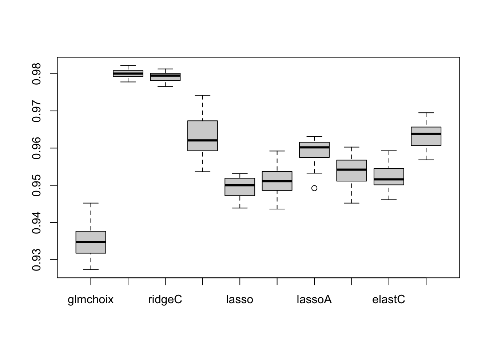

14 Comparaison en classification supervisée
Exercice 1 (Questions de cours) C, D, A, B.
Exercice 2 (Règle de Bayes)
- La règle de Bayes est définie par \[% g^\star(x)=\left\{ \begin{array}{ll} 1& \text{si }\mathbf P(Y=1|X=x)\geq 0.5 \\ 0& \text{sinon.} \end{array}\right. \] L’erreur de Bayes est définie par \(L^\star=\mathbf P(g^\star(X)\neq Y)\).
- On a \[% \begin{aligned} \mathbf P(g(X)\neq Y|X=x) & = 1-\Big(\mathbf P(g(X)=Y,g(X)=1|X=x) \\ & \hspace{2cm}+\mathbf P(g(X)=Y,g(X)=0|X=x)\Big) \\ & = 1-\Big(\mathbf 1_{g(x)=1}\mathbf P(Y=1|X=x) \\ & \hspace{2cm}+\mathbf 1_{g(x)=0}\mathbf P(Y=0|X=x)\Big) \\ & = 1-(\mathbf 1_{g(x)=1}\eta(x)+\mathbf 1_{g(x)=0}(1-\eta(x))). \end{aligned} \]
- On déduit \[% \begin{aligned} \mathbf P( g(X)\neq Y|X=x)-\mathbf P(g^\star(X)\neq Y|X=x) & = \eta(x)\left(\mathbf 1_{g^\star(x)=1}-\mathbf 1_{g(x)=1}\right)+(1-\eta(x))\left(\mathbf 1_{g^\star(x)=0}-\mathbf 1_{g(x)=0}\right) \\ & = \eta(x)\left(\mathbf 1_{g^\star(x)=1}-\mathbf 1_{g(x)=1}\right)+(1-\eta(x))\left(1-\mathbf 1_{g^\star(x)=1}-(1-\mathbf 1_{g(x)=1})\right) \\ & = (2\eta(x)-1) \left(\mathbf 1_{g^\star(x)=1}-\mathbf 1_{g(x)=1}\right) \\ \end{aligned} \]
- Quand le premier terme \((2\eta(x)-1)\) est positif cela signifie que \(\eta(x)=\mathbf P(Y|=1X=x)\geq 0.5\). Par définition de \(g^\star\) nous en déduisons donc que \(g^\star(x)=1\) et donc que le second terme est aussi positif ou nul.
- Quand le premier terme \((2\eta(x)-1)\) est négatif cela signifie que \(\eta(x)=\mathbf P(Y|=1X=x)< 0.5\). Par définition de \(g^\star\) nous en déduisons donc que \(g^\star(x)=0\) et donc que le second terme est aussi négatif ou nul.
En conclusion nous avons bien que \[% \mathbf P(g(X)\neq Y|X=x)-\mathbf P(g^\star(X)\neq Y|X=x) = (2\eta(x)-1) \left(\mathbf 1_{g^\star(x)=1}-\mathbf 1_{g(x)=1}\right) \geq 0 \]
- On conclut en intégrant par la loi de \(X\) que \[% \mathbf P(g(X)\neq Y)\geq \mathbf P(g^\star(X)\neq Y). \]
- Pour la règle de Bayes, on a
- si \(x\leq 0\), on a \(\mathbf P(Y=1|X=x)=\mathbf P(U\leq 2)=\frac{1}{5}\) \(\Longrightarrow\) \(g^\star(x)=0\).
- si \(x> 0\), on a \(\mathbf P(Y=1|X=x)=\mathbf P(U> 2)=\frac{9}{10}\) \(\Longrightarrow\) \(g^\star(x)=1\).
Exercice 3 (Fonctions R)
Exercice 4 (Score aléatoire) Il suffit d’utiliser l’indépendance entre \(S(X)\) et \(Y\) : \[ \begin{aligned} x(s)= & \mathbf P(S(X)> s|Y=0)=\mathbf P(S(X)> s)=\mathbf P(S(X)\geq s) \\ =& \mathbf P(S(X)\geq s|Y=1)=y(s), \end{aligned} \]
Exercice 5 (Score parfait et courbe ROC) Nous prendrons un score variant entre \(-\infty\) et \(+\infty\). Si le score est issu d’une probabilité il variera entre \(0\) et \(1\) et il suffira de remplacer \(-\infty\) par 0 et \(+\infty\) par 1 dans le calculs qui suivent. Le score est parfait et nous avons donc un seuil \(s^\star\) tel que - si \(S(x)\leq s^\star\) nous avons forcément \(Y=0\) et réciproquement. Autrement dit \(\mathbf P(Y=0|S(x)\leq s^\star)=1\) et \(\mathbf P(S(X)\leq s^\star|Y=0)=1\) - et aussi dans l’autre sens si \(S(x)> s^\star\) nous avons forcément \(Y=1\) et réciproquement. Autrement dit \(\mathbf P(Y=1|S(x)> s^\star)=1\) et \(\mathbf P(S(X)> s^\star|Y=1)=1\).
Analysons la courbe paramétrée en ce point: \(s^\star\). On a ici pour l’abscisse \[% \begin{align*} x(s^\star)= & \mathbf P(S(X)> s^\star|Y=0) \\ =&1 - \mathbf P(S(X)\geq s^\star | Y=0)\\ =& 1-1 =0. \end{align*} \]
Calculons l’ordonnée: \[% \begin{aligned} y(s^\star)=&\mathbf P(S(X)\geq s^\star|Y=1)= 1-\mathbf P(S(X)\leq s^\star|Y=1) \\ =&1- \frac{\mathbf P(S(X)\leq s^\star\cap Y=1)}{\mathbf P(Y=1)}\\ =&1- \frac{\mathbf P(Y=1| S(X)\leq s^\star)\mathbf P(S(X)\leq s^\star) }{\mathbf P(Y=1)} \\ =&1- \frac{(1-\mathbf P(Y=0| S(X)\leq s^\star))\mathbf P(S(X)\leq s^\star) }{\mathbf P(Y=1)} \\ =&1 -0=1 \end{aligned} \] puisque \(\mathbf P(Y=0| S(X)\leq s^\star)=1.\)
Conlusion: en \(s^\star\) la courbe est au point \(M=(1,0)\).
Plaçons nous en une valeur \(s>s^\star.\) Puisque \(s>s^\star\) nous avons forcément que que quand \(S(X)>s\) on a \(Y=1\) et donc \(\mathbf P(Y=1| S(X)> s)=0.\) \[% \begin{aligned} x(s)= & \mathbf P(S(X)> s|Y=0) \\ =&\frac{\mathbf P(S(X)> s\cap Y=0)}{\mathbf P(Y=0)}\\ =& \frac{\mathbf P(Y=0| S(X)> s)\mathbf P(S(X)> s) }{\mathbf P(Y=0)} \\ =& \frac{(1-\mathbf P(Y=1| S(X)> s))\mathbf P(S(X)> s) }{\mathbf P(Y=0)}=0 \end{aligned} \] Pour l’ordonnée nous avons que \[% \begin{aligned} y(s)=&\mathbf P(S(X)\geq s|Y=1)= 1-\mathbf P(S(X)\leq s|Y=1) \end{aligned} \] Comme \(prob(S(X)\leq s|Y=1)\) est une fonction de répartition nous avens donc que \(\lim_{s\rightarrow+\infty}prob(S(X)\leq s|Y=1)=1\) et donc que \[% \begin{aligned} \lim_{s\rightarrow+\infty}y(s)=&0 \end{aligned} \] Conclusion: pour \(s\geq s^\star\) l’abscisse vaut toujours 0 et l’ordonnée tend vers 0. Donc quand \(s\in[s^\star, +\infty[\) le point \((x(s),y(s))\) parcourt le segment \([O,M]\).
Plaçons nous dans le cas où \(s<s^\star\). Dans ce cas nous avons que l’évènement \(\{S(X)\geq s^\star|Y=1\} \subset\{S(X)\geq s|Y=1\}\) et donc \[% \begin{aligned} y(s)=&\mathbf P(S(X)\geq s|Y=1)\geq \mathbf P(S(X)\geq s^\star|Y=1)=1 \end{aligned} \] De plus nous avons que \[% \begin{aligned} x(s)=&\mathbf P(S(X)> s|Y=0)= 1-\mathbf P(S(X)\leq s|Y=0) \end{aligned} \]
Comme \(prob(S(X)\leq s|Y=0)\) est une fonction de répartition nous avens donc que \(\lim_{s\rightarrow-\infty}prob(S(X)\leq s|Y=0)=0\) et donc que \[% \begin{aligned} \lim_{s\rightarrow-\infty}x(s)=&1 \end{aligned} \] Conclusion: pour \(s\leq s^\star\) l’ordonnée vaut toujours 1 et l’absicsse tend vers 0. Donc quand \(s\in]- \infty , s^\star]\) le point \((x(s),y(s))\) parcourt le segment \([M, (1,1)]\).
Exercice 6 (Score parfait et courbe lift) Nous prendrons un score variant entre \(-\infty\) et \(+\infty\). Si le score est issu d’une probabilité il variera entre \(0\) et \(1\) et il suffira de remplacer \(-\infty\) par 0 et \(+\infty\) par 1 dans le calculs qui suivent. Le score est parfait et nous avons donc un seuil \(s^\star\) tel que - si \(S(x)\leq s^\star\) nous avons forcément \(Y=0\) ou autrement dit \(\mathbf P(Y=0|S(x)\leq s^\star)=1\); - et aussi dans l’autre sens si \(S(x)> s^\star\) nous avons forcément \(Y=1\) ou autrement dit \(\mathbf P(Y=1|S(x)> s^\star)=1\).
Analysons la courbe paramétrée en ce point: \(s^\star\). On a ici pour l’abscisse \[% \begin{align*} x(s^\star)= & \mathbf P(S(X)> s^\star) = \mathbf P(S(X)> s^\star \cap Y=0) + \mathbf P(S(X)> s^\star \cap Y=1)\\ = & \mathbf P(S(X)> s^\star | Y=0)\mathbf P(Y=0) + \mathbf P(S(X)> s^\star | Y=1)\mathbf P(Y=1) \end{align*} \] Comme le score est parfait nous avons que \(\mathbf P(S(X)> s^\star | Y=0)=0\) et \(\mathbf P(S(X)> s^\star | Y=1)=1\) d’où la conclusion \[% \begin{aligned} x(s^\star)= \mathbf P(Y=1) \end{aligned} \]
Calculons maintenant l’ordonnée: \[% \begin{aligned} y(s^\star)=&\mathbf P(S(X)\geq s^\star |Y=1)=1 \end{aligned} \] puisque le score est parfait.$
Conlusion: en \(s^\star\) la courbe est au point \(M=(\mathbf P(Y=1),1)\).
Plaçons nous en un point \(s\geq s^\star\). L’abscisse vaut \[% \begin{aligned} x(s)= & \mathbf P(S(X)> s) \end{aligned} \] et l’ordonnée \[% \begin{aligned} y(s)=&\mathbf P(S(X)\geq s |Y=1) = \frac{\mathbf P(S(X)\geq s \cap Y=1)}{\mathbf P(Y=1)} \end{aligned} \] Comme le score est parfait nous avons en \(s\geq s^\star\) \[% \begin{aligned} \mathbf P( Y=1|S(X)\geq s) &= 1\\ \mathbf P( Y=0|S(X)\geq s) &= 0\\ \frac{\mathbf P(S(X)\geq s \cap Y=0)}{\mathbf P(S(X)\geq s )}&=0\\ \mathbf P(S(X)\geq s \cap Y=0)&=0 \end{aligned} \] nous pouvons donc ajouter \(\mathbf P(S(X)\geq s \cap Y=0)\) et obtenir \[% \begin{aligned} y(s)=& \frac{\mathbf P(S(X)\geq s \cap Y=1) + \mathbf P(S(X)\geq s \cap Y=0)}{\mathbf P(Y=1)}= \frac{\mathbf P(S(X)\geq s)}{\mathbf P(Y=1)}\\ &=\frac{x(s)}{\mathbf P(Y=1)} \end{aligned} \] On en déduit donc que le coefficient directeur de la droite est \(1/\mathbf P(Y=1)\) et qu’elle passe par le point \((x(s^\star), y(s^\star))\). Trouvons maintenant le point quand \(s\rightarrow+\infty\). Nous savons que \(x(s)=\mathbf P(S(X)> s)=1-\mathbf P(S(X)\geq s)\) et que \(prob(S(X)\geq s)\) est une fonction de répartition, nous avons donc que \(\mathbf P(S(X)\geq s)\rightarrow+1\) et donc que \(x(s)\rightarrow 0\). Comme \(y(s)=x(s)/\mathbf P(Y=1)\) on en déduit que \(y(s)\rightarrow 0\). Conlusion: entre \(s^\star\) et \(+\infty\) le point \((x(s), y(s))\) parcours le segment \((x(s^\star), y(s^\star))\) \((0,0)\).
- Quand \(s= s^\star\) le score parfait on a \[% \begin{aligned} y(s^\star)=&\mathbf P(S(X)\geq s^\star |Y=1)=1 \end{aligned} \] Si nous avons \(s\leq s^\star\) l’évènement le score est plus grand que \(s\) contient forcément l’évènement le score est plus grand que \(s^\star\) et donc en en déduit que \[% \begin{aligned} y(s)=&\mathbf P(S(X)\geq s|Y=1)\geq \mathbf P(S(X)\geq s^\star|Y=1)=1 \end{aligned} \] Donc puisqu’il s’agit d’une probabilité nous avons \(y(s)=1 \ \forall s\leq s^\star\). Par ailleurs l’abscisse est par définition \[% \begin{aligned} x(s)= & \mathbf P(S(X)> s) = 1 - \mathbf P(S(X)\leq s) \end{aligned} \] et quand \(s\rightarrow-\infty\) la fonction de répartition tend vers 0 et donc \(x(s)\rightarrow 1\)
Exercice 7 (Calculs de scores avec R)
On propose d’utiliser la version empirique de \[ AUC(S)=\mathbf P(S(X_1)\geq S(X_2)|(Y_1,Y_2)=(1,-1)), \] c’est-à-dire d’estimer l’AUC en calculant, parmi les paires qui vérifient \((Y_1,Y_2)=(1,-1)\), la proportion de paires qui vérifient \(S(X_1)\lt S(X_2)\). Si on note \[ \mathcal I=\{(i,j),y_i=1,y_j=0\}, \] alors l’estimateur s’écrit \[ \widehat{AUC}(S)=\frac{1}{|\mathcal I|}\sum_{(i,j)\in\mathcal I}\mathbf 1_{S(X_i)>S(S_j)}. \]
On importe les données
df <- read.csv("../donnees/logit_ex6.csv")set.seed(1234) ind_app <- sample(nrow(df),300) dapp <- df[ind_app,] dtest <- df[-ind_app,]logit <- glm(Y~.,data=dapp,family="binomial")score <- predict(logit,newdata=dtest,type="response")D0 <- which(dtest$Y==0) D1 <- which(dtest$Y==1) score0 <- score[D0] score1 <- score[D1] score.01 <- expand.grid(S0=score0,S1=score1) mean(score.01$S1>score.01$S0)[1] 0.7385817pROC::roc(dtest$Y,score)Call: roc.default(response = dtest$Y, predictor = score) Data: score in 104 controls (dtest$Y 0) < 96 cases (dtest$Y 1). Area under the curve: 0.7386
Exercice 8 (Validation croisée)
Importons les données de détection d’images publicitaires sur internet
pub <- read.table("../donnees/ad_data.txt", header = FALSE, sep = ",", dec = ".", na.strings = "?", strip.white = TRUE) names(pub)[ncol(pub)] <- "Y" table(pub$Y)ad. nonad. 459 2820Créons un facteur pour la variable à expliquer en gérant l’ordre des facteurs.
pub$Y <- factor(pub$Y, labels=c("1","0")) pub$Y <- relevel(pub$Y, "0") pub <- pub[,-(1:4)] table(pub$Y)0 1 2820 459Construisons nos blocs.
- On crée une variable discrète
blocqui donnera les appartenances au bloc (donc des valeurs entre 1 et 10) - Pour chaque niveau de \(Y\), on crée une variable d’appartenance au bloc valant 1, 2, …, 10, 1, 2, …, 10, 1…. Il y a donc par construction autant (ou un de moins) de 1 que de 2, …, que de 10 pour chaque niveau de \(Y\). L’appartenance au bloc étant séquentielle ce n’est pas trop souhaitable
- On permute aléatoirement cette variable pour chaque niveau et on affecte ces valeurs aux coordonnées de chaque niveau de \(Y\)
ind0 <- which(pub$Y==0) ind1 <- which(pub$Y==1) set.seed(1234) nbbloc <- 10 bloc <- 1:nrow(pub) bloc[ind0] <- sample(rep(1:nbbloc, length = length(ind0))) bloc[ind1] <- sample(rep(1:nbbloc, length = length(ind1)))- On crée une variable discrète
Probabilité estimée d’une publicité Nous ajustons/estimons chaque modèle sur tous les blocs sauf le \(i^e\) et nous calculons les probabilités estimées du label 1 sur le bloc \(i\). Ceci est fait pour tous les blocs. Nous rangeons les probabilités estimées dans l’objet
SCORE:library(glmnet) nomsmodeles <- c("glm", "glmchoix", paste0(rep(c("ridge", "lasso", "elast"), 3), rep(c("", "C", "A"), each=3))) ## resultats des modeles + Y a prevoir SCORE <- data.frame(matrix(0, length(bloc), length(nomsmodeles)+1)) names(SCORE) <- c("Y", nomsmodeles) ## premiere colonne la var Y a prevoir SCORE$Y <- pub$Y models <- list() # si on veut voir les variables choisies ## VC 10 fold for(i in 1:nbbloc){ print(i) pubA <- pub[bloc!=i,] pubT <- pub[bloc==i,] ##Logistique global reglog <- glm(Y~.,data=pubA,family="binomial") SCORE[bloc==i,"glm"] <- predict(reglog,pubT,type="response") ##Logistique choix reg1 <- glm(Y~1,data=pubA,family="binomial") choix <- step(reg1,scope=list(lower=formula(reg1),upper=formula(reglog)),trace=0) models[[i]] <- formula(choix) SCORE[bloc==i,"glmchoix"] <- predict(choix,pubT,type="response") ## XA <- pub.X[bloc!=i,] YA <- pub.Y[bloc!=i] XT <- pub.X[bloc==i,] ## ridge mod <- cv.glmnet(XA,YA,alpha=0,family="binomial") SCORE[bloc==i,"ridge"] <- as.vector(predict(mod, XT, "lambda.1se", type="response")) ## lasso mod <- cv.glmnet(XA,YA,alpha=1,family="binomial") SCORE[bloc==i,"lasso"] <- as.vector(predict(mod,XT, "lambda.1se", type="response")) ## elast mod <- cv.glmnet(XA,YA,alpha=.5,family="binomial") SCORE[bloc==i,"elast"] <- as.vector(predict(mod,XT, "lambda.1se", type="response")) ## ridge CV class mod <- cv.glmnet(XA,YA,alpha=0,family="binomial",type.measure="class") SCORE[bloc==i,"ridgeC"] <- as.vector(predict(mod, XT, "lambda.1se", type="response")) ## lasso CV class mod <- cv.glmnet(XA,YA,alpha=1,family="binomial",type.measure="class") SCORE[bloc==i,"lassoC"] <- as.vector(predict(mod,XT, "lambda.1se", type="response")) ## elast CV class mod <- cv.glmnet(XA,YA,alpha=.5,family="binomial",type.measure="class") SCORE[bloc==i,"elastC"] <- as.vector(predict(mod,XT, "lambda.1se", type="response")) ## ridge CV AUC mod <- cv.glmnet(XA,YA,alpha=0,family="binomial",type.measure="auc") SCORE[bloc==i,"ridgeA"] <- as.vector(predict(mod, XT, "lambda.1se", type="response")) ## lasso CV AUC mod <- cv.glmnet(XA,YA,alpha=1,family="binomial",type.measure="auc") SCORE[bloc==i,"lassoA"] <- as.vector(predict(mod, XT, "lambda.1se", type="response")) ## elast CV AUC mod <- cv.glmnet(XA,YA,alpha=.5,family="binomial",type.measure="auc") SCORE[bloc==i,"elastA"] <- as.vector(predict(mod, XT, "lambda.1se", type="response")) } saveRDS(SCORE,"../data_aux/scorepubm4_1VC.RDS")On calcule la courbe ROC On peut utiliser
pROCet créer l’objet de classerocpuis sur cet objet calculer l’AUC pour chaque modèle:library(pROC) SCORE <- readRDS("../data_aux/scorepubm4_1VC.RDS") rocCV <- roc(Y~.,data=SCORE) sort(round(unlist(lapply(rocCV, auc)), 3), decreasing=TRUE)[1:6]ridge ridgeC ridgeA elastA lassoA elastC 0.982 0.982 0.963 0.963 0.961 0.959Pour aller plus loin on peut répéter la même procédure 20 fois (en parallèle)
- données et cluster
library(glmnet) library(doParallel) pub <- read.table("ad_data.txt",header=FALSE,sep=",",dec=".",na.strings = "?",strip.white = TRUE) names(pub)[ncol(pub)] <- "Y" pub$Y <- factor(pub$Y,labels=c("1","0")) pub$Y <- relevel(pub$Y,"0") pub <- pub[,-(1:4)] ind0 <- which(pub$Y==0) ind1 <- which(pub$Y==1) ##les 0 sont au début les 1 à la fin ## bloc <- rep(0,nrow(pub)) pub.X <- model.matrix(Y~.,data=pub)[,-1] pub.Y <- pub[,"Y"] niter <- 20 coredispo <- max(detectCores()-1,1) cl <- makeCluster(min(coredispo,niter)) clusterSetRNGStream(cl,iseed=78) registerDoParallel(cl)
boucle Attention, c’est «un peu» long (sur une machine avec plus de 20 coeurs, il faut 1-2 jours)
res <- foreach(j=1:niter) %dopar% { library(glmnet) nomsmodeles <- c("glm", "glmchoix", paste0(rep(c("ridge", "lasso", "elast"), 3), rep(c("", "C", "A"), each=3))) ## resultats des modeles + Y a prevoir SCORE <- data.frame(matrix(0, length(bloc), length(nomsmodeles)+1)) names(SCORE) <- c("Y", nomsmodeles) ## premiere colonne la var Y a prevoir SCORE <- data.frame(Y=pub$Y) nbbloc <- 10 set.seed(1234+j) bloc[ind0] <- sample(rep(1:nbbloc, length = length(ind0))) bloc[ind1] <- sample(rep(1:nbbloc, length = length(ind1))) for(i in 1:nbbloc){ pubA <- pub[bloc!=i,] pubT <- pub[bloc==i,] ##Logistique global reglog <- glm(Y~.,data=pubA,family="binomial") SCORE[bloc==i,"glm"] <- predict(reglog,pubT,type="response") ##Logistique choix reg1 <- glm(Y~1,data=pubA,family="binomial") choix <- step(reg1,scope=list(lower=formula(reg1),upper=formula(reglog)),trace=0) SCORE[bloc==i,"glmchoix"] <- predict(choix,pubT,type="response") ## XA <- pub.X[bloc!=i,] YA <- pub.Y[bloc!=i] XT <- pub.X[bloc==i,] ## ridge mod <- cv.glmnet(XA,YA,alpha=0,family="binomial") SCORE[bloc==i,"ridge"] <- as.vector(predict(mod, XT, "lambda.1se", type="response")) ## lasso mod <- cv.glmnet(XA,YA,alpha=1,family="binomial") SCORE[bloc==i,"lasso"] <- as.vector(predict(mod,XT, "lambda.1se", type="response")) ## elast mod <- cv.glmnet(XA,YA,alpha=.5,family="binomial") SCORE[bloc==i,"elast"] <- as.vector(predict(mod,XT, "lambda.1se", type="response")) ## ridge CV class mod <- cv.glmnet(XA,YA,alpha=0,family="binomial",type.measure="class") SCORE[bloc==i,"ridgeC"] <- as.vector(predict(mod, XT, "lambda.1se", type="response")) ## lasso CV class mod <- cv.glmnet(XA,YA,alpha=1,family="binomial",type.measure="class") SCORE[bloc==i,"lassoC"] <- as.vector(predict(mod,XT, "lambda.1se", type="response")) ## elast CV class mod <- cv.glmnet(XA,YA,alpha=.5,family="binomial",type.measure="class") SCORE[bloc==i,"elastC"] <- as.vector(predict(mod,XT, "lambda.1se", type="response")) ## ridge CV AUC mod <- cv.glmnet(XA,YA,alpha=0,family="binomial",type.measure="auc") SCORE[bloc==i,"ridgeA"] <- as.vector(predict(mod, XT, "lambda.1se", type="response")) ## lasso CV AUC mod <- cv.glmnet(XA,YA,alpha=1,family="binomial",type.measure="auc") SCORE[bloc==i,"lassoA"] <- as.vector(predict(mod, XT, "lambda.1se", type="response")) ## elast CV AUC mod <- cv.glmnet(XA,YA,alpha=.5,family="binomial",type.measure="auc") SCORE[bloc==i,"elastA"] <- as.vector(predict(mod, XT, "lambda.1se", type="response")) write(paste("rep.",j,"bloc",j),file="progress.txt",append=TRUE) } SCORE } saveRDS(res,"../data_aux/scorepubm4_20VC.RDS") stopCluster(cl)analyse résultats
ffroc <- function(x) roc(Y~., data=x) ttm4_20 <- lapply(scorepubm4_20VC, ffroc) ffauc <- function(x) unlist(lapply(x, auc)) aucm4_20 <- do.call(rbind, lapply(ttm4_20, ffauc)) print(sort(apply(aucm4_20,2,mean), decreasing=TRUE)[1:6])ridge ridgeC elastA ridgeA lassoA elast 0.9800319 0.9792532 0.9631016 0.9626010 0.9590724 0.9537869nom <- names(sort(apply(aucm4_20,2,mean), decreasing=TRUE)[1:6]) ## boxplot boxplot(aucm4_20[,-1][,c(1,2,5,8,3,6,9,4,7,10)])
## export boxplot(aucm4_20[,-1][,c(1,2,5,8,3,6,9,4,7,10)])